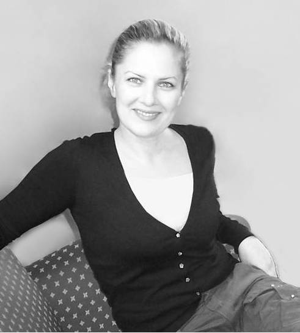
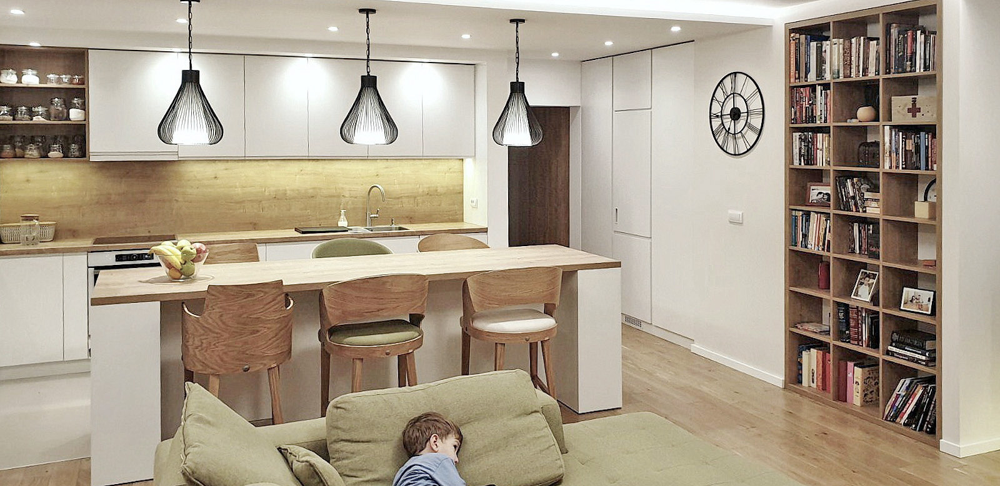
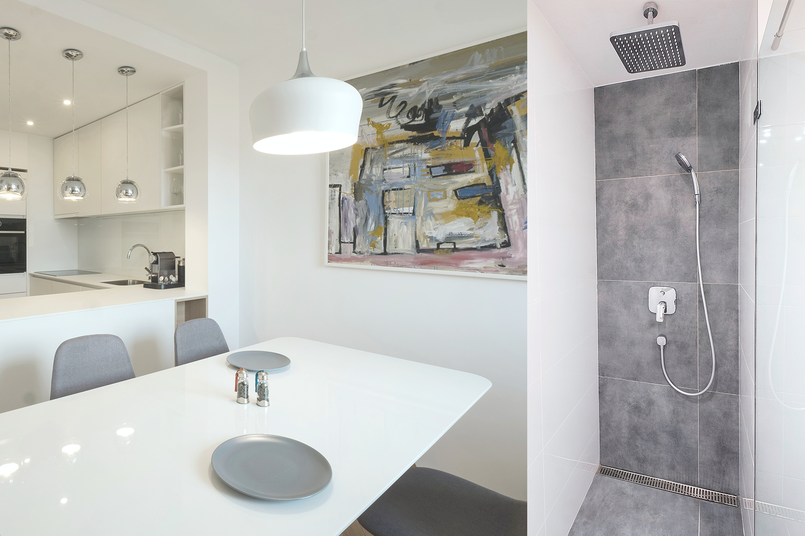

|  | Rodjena u Beogradu. Pohadjala studije Arhitekture u Beogradu I diplomirala 2002 godine (M.Arch.) Na fakultetu pohadjala izabrano dvogodisnje usmerenje u oblasti Enterijerijerskog dizajna . Nakon diplomiranja, polagala I stekla licencu odgovornog projektanta. Tokom studija provela 2 lepe i znacajne godine zivota u Londonu (UK). Radno iskustvo steceno u Srbiji (Beogradu) I internacionalno -na velikim projektima (Dubai-UAE, Shanghai-China, Almaty-Kazahstan ,Ontario-Canada) Skoro 20 godina rada u oblastima arhitektonskog I enterijerskog dizajna, dizajn koordinacije, menadzmenta I projektantskog nadzora. Nakon vise godina provedenih u radu na komercijalnim projektima za lokalne I nternacionalne firme, 2015 zapocinjem samostalan rad u polju enterijerijerskog dizajna I njegovog izvodjenja. Najvise uzivam u kreiranju rezidencijalnih enterijera - autenticnih prostora za autenticne ljude koji zive svoje uzurbane zivote u Beogradu, pa I sire. |
Oblast rada ukljucuje DIZAJN - IZVODJENJE - OPREMANJE , za sve vrste stambenih prostora/enterijera, kao I razlicite potrebe klijenata u okvirima tih oblasti; Kupili ste stan u staroj gradnji I zelite da ga u potpunosti adaptirate I transformisete u dom svojih snova? Posedujete nekretninu koju zelite da u kratkom roku unapredite I sto bolje izdate/prodate ? Kupili ste stan u novogradnji I zelite da ga opremite-za vas ili u svrhu izdavanja? Zelite da promenite/osvezite samo jedan deo stana?. Spremna sam da odgovorim na svaku vasu potrebu I sprovedem proces u potpunosti I u skladu sa vasim potrebama I budzetom; od ideje I projekta, pa do izvodjenja I opremanja, I predaje’’ kljuca u ruke’’. Od usluga mozete ugovoriti nezavisno samo Dizajn (izradu Projekta Enterijera sa svim informacijama I crtezima potrebnim za izvodjenje radova, kao I definiciju kompletnog namestaja, rasvete I ostale potrebne opreme) . U ovom slucaju, sami pronalazite izvodjace (pojedinacne majstote ili preduzimaca) koji su dalje tokom faze izvodjenja I opremanja odgovorni za realizaciju projekta. U slucaju da zelite da mi poverite sve tri faze, Dizajn –Izvodjenje- Opremanje, ostajem sa Vama do kraja projekta -do predaje kljuca u ruke. U tom slucaju, ceo process organizacije majstora I radova kao I svakodnevni profesionalni nadzor kvaliteta radova, montaza i isporuka su moj posao, obaveza I odgovornost. Fazu izvodjenja radova I opremanja fiksnim namestajem, organizujem I sprovodim sa grupom proverenih majstora, koji su se tokom vremena dokazalali u pogledu skladne saradnje, kvaliteta radova, optimalne cene kao i postovanja svih dogovora I rokova.
Proces saradnje uvek zapocinje upoznavanjem kroz otvoreni razgovor o tome ko je moj Klijent, I kako On/Ona zele da zive. Zelim da cujem sve o vasem buducem prostoru kao I o vasim potrebama, sklonostima, ukusima, zeljama, ocekivanjima I snovima... Uspostavljanje otvorenog dijaloga kroz konstruktivnu razmenu informacija, ideja I misljenja, vode ka uspostavljanju medjusobnog razumevanja, poverenja I skladne saradnje . Vazno je da budite iskreni, opusteni , otvoreni za nove ideje i da dopustite/prepustite profesionalcu da vas savetuje I vodi kroz ceo process. Iz takve saradnje proizilaze i najbolja resenja: funkcionalni, autenticni, pazljivo krojeni prostori/ambijenti u kojima cete moci da se prepoznate. Svaki novi projekat, za mene predstavlja I novi izazov I zapravo daje unikatan odgovor (u smislu funkcije I stila) na pocetno,vrlo licno I kompleksno pitanje, ko ste Vi I kako zelite da zivite. PRISTUP POSLU Tokom saradnje, moj pristup poslu, klijentima I svim saradnicima je prijateljski ali istovremeno I organizovan. Velika posvecenost svakom pojedinacnom klijentu I projektu, dostupnost I fleksibilnost tokom saradnje, kao i licni I profesionalni integritet , su principi od kojih nikada ne odustajem I na koje mozete da racunate. Takodje, jedan od mojih vaznih ciljeva je da planirani predlozi I resenja budu uklopljeni u predvidjeni budzet. Budzeti mogu da variraju, narocito kada govorimo o opremanju. Lepo je raditi sa visokim budzetom, ali uz pravilno resenje I odabir, moguce je I sa manjim sredstvima postici vrlo lep, atraktivan ambijent, koji ce u potpunosti zadovoljiti sve kriterijume. Smatram da enterijeri moraju biti prostori nastali kao plod funkcije po meri coveka a ne puke kulise. Kreirani prostori I ambijenti jesu setovi-scene, ali kreirani ne za teatar ,vec za stvarni zivot I stvarne ljude…Krojeni po meri, takvi enterijeri u potpunosti reflektuju svoje buduce korisnike. Svojom autenticnom lepotom I znacenjem oni doticu njihova srca (pa I moje ) u najsirem I najlepsem mogucem smislu. Veoma volim to sto radim i nastojim da svojim klijentima prenesem entuzijazam I znanje a da im pritom pruzim potrebnu podrsku u svakoj ideji , zelji i koraku. Moj osnovni a ujedno I najvazniji cilj je da budete zadovoljni celim procesom saradnje kao I da budete potpuno iznenadjeni I istinski odusevljeni krajnjim rezultatom ! O MOJIM KLIJENTIMA Moji klijenti su uglavnom porodicni ljudi ili pojedinci koji se aktivno bave svojim profesijama I koji zive svoje uzurbane gradske zivote... U 100% slucajeva, oni se javljaju preko preporuke prijatelja ili bivsih zadovoljnih klijenata. To su ljudi koji imaju nadprosecna ocekivanja povodom funkcionalno-estetskih resenja prostora u kojima zele da zive ili koje zele da izdaju/prodaju. Oni shvataju da im je potrebna profesionalna pomoc u dostizanju tog cilja a ujedno zele da izbegnu greske , losa resenja I da sacuvaju svoje vreme, zivce I novac. Pored toga, oni znaju da je to I najbolji nacin da podignu vrednost svoje nekretnine. REKLI SU…………………………………..(ovo tek treba da nabavim od svojih bivsih klijenata)
|  |  |
|
 |
|---|---|---|---|
 |
 | |
|